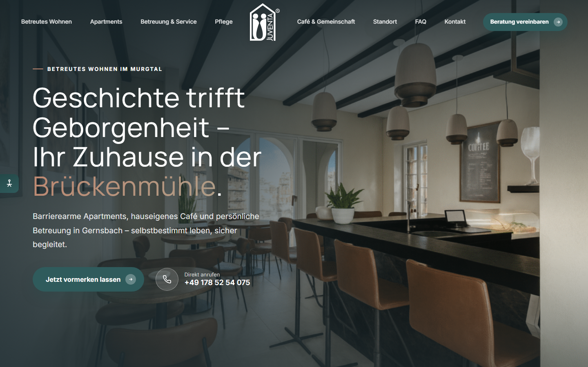
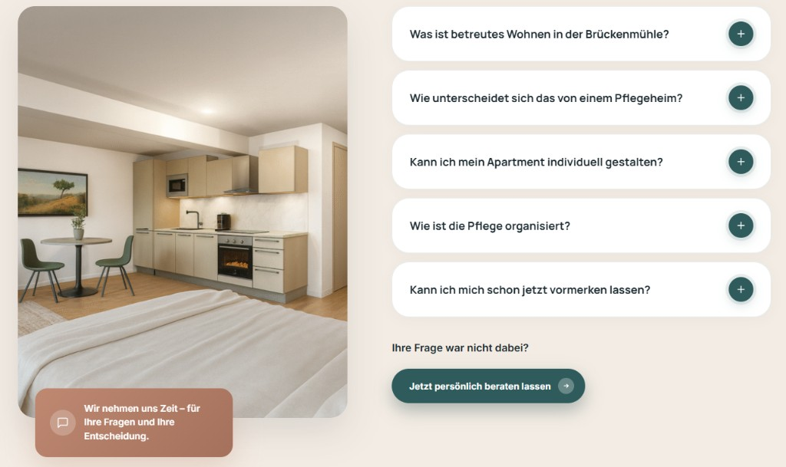

Gesamtwirkung
Hochwertig und einladend – wie ein Boutique-Hotel im historischen Gewand. Viel Weißraum, warme Töne, keine visuelle Hektik.
Design-Dokumentation
Dieses Handout dokumentiert das visuelle System der Juventa-Startseite Betreutes Wohnen Brückenmühle Gernsbach – Farben, Typografie, Komponenten und Layoutprinzipien in kompakter, kuratierter Form.
Warme Naturtöne treffen auf vertrauensvolles Waldgrün – die Palette verbindet regionale Geborgenheit mit professioneller Pflegekompetenz.
#2F5B5C
Buttons, Labels, Akzente, Pflege-Boxen, Kontakt-Panel
#244848
Verläufe, Hover-Zustände, dunkle Flächen
#3d7273
Aufhellung in Verläufen und dezenten Flächen
#BE8871
Eyebrow-Linien, Logo-Akzent, FAQ-Badge, Hover-Highlights
#A5715C
Verläufe in Badges, dunklere Hover-Töne
#AF9E88
Warme Sekundärtöne, Headline-Verläufe, dezente Akzente
#F3ECE4Body-Hintergrund#FFFAF8Section--cream#1e2d33Fließtext, Headlines#424241Footer (Logo-Ton)Zwei Google Fonts bilden ein klares Duett: Manrope für Headlines, Inter für UI und Fließtext – gut lesbar, auch für ältere Zielgruppen.
| Rolle | Schrift | Gewicht | CSS-Variable / Wert |
|---|---|---|---|
| Headlines | Manrope | 400–700 | --font-head |
| Fließtext & UI | Inter | 400–700 | --font-sans |
| Body-Größe | Inter | 400 | --fs-body: 1.0625rem |
| Zeilenhöhe Body | — | — | line-height: 1.75 |
clamp(2.2rem, 5.4vw, 4.2rem) · Manrope 400 · lh 1.2
clamp(1.9rem, 4vw, 3rem) · Manrope 400
clamp(1.2rem, 2vw, 1.45rem) · Manrope 600–700
Im Herzen von Gernsbach erwacht die historische Brückenmühle neu.
--fs-lead · Inter · lh 1.55
Selbstbestimmt leben, sicher begleitet – mit persönlicher Betreuung im Murgtal.
1.0625rem · Inter 400 · --c-ink-soft
0.8rem · Inter 700 · letter-spacing 0.18em · uppercase
Eine klare visuelle Hierarchie: Eyebrow → H2 → Lead → Fließtext. Akzent-Wörter werden per Gradient oder Farbe hervorgehoben.
Antworten auf das, was Interessentinnen und Interessenten uns am häufigsten fragen.
Pill-förmige Buttons mit integriertem Pfeil-Kreis. Primär in Waldgrün, Varianten für helle und dunkle Kontexte.
| Form | Pill (border-radius: 50px) |
|---|---|
| Padding | 15px 18px 15px 28px (lg: 17px 20px 17px 32px) |
| Pfeil | Kreis rechts (.btn__arrow), 22–26px |
| Hover | translateY(-3px), stärkerer Schatten |
| Schrift | Inter 700, 15–16px, keine Unterstreichung |
Call-to-Actions sind klar erkennbar: Primärbutton mit Pfeil, wiederkehrend im Hero, in Sektionen und im Kontaktblock.

Hero: Primär-CTA „Jetzt vormerken“ + sekundärer Telefon-Link mit Play-Icon.
Wiedererkennung durch Pfeil-Kreis und konsistente Formulierungen
Sticky Header mit Overlay-Modus über dem Hero. Logo zentriert, Links symmetrisch – auf Mobile als Drawer.
--header-haria-expanded am Menü-ToggleVollflächiger Bild-Slider mit Text links und vier Kategorie-Karten am unteren Rand – emotionaler Einstieg in die Seite.
4 Hintergrundslides, automatischer Wechsel (5,5s), sanfter Zoom. Dunkles Overlay für Lesbarkeit.
Eyebrow, H1 mit Light-Accent, Subline, Primär-CTA + Telefon-Link mit Play-Icon.
4 Hero-Cards (Betreutes Wohnen, Apartments, Service, Pflege) – halbtransparent, Hover-Akzent.
Ein konsistentes Raster mit maximal 1280px Inhaltsbreite, fluiden Abständen und abwechselnden Hintergründen.
| Token | Wert | Einsatz |
|---|---|---|
--maxw | 1280px | Container-Breite |
--gutter | clamp(1.25rem, 4vw, 1.75rem) | Seitenabstand |
.section | padding-block clamp(4.5rem, 9vw, 6.5rem) | Sektions-Rhythmus |
--r-sm … --r-xl | 12 / 20 / 28 / 40px | Border-Radius-Skala |
--shadow-xs … lg | 4 Stufen | Tiefe für Cards & Panels |
Mehrere Card-Typen für unterschiedliche Inhalte – von Hero-Karten bis Feature-Grids und Akkordeon-Panels.
Bodengleiche Duschen und durchdachte Grundrisse.
Horizontale Panels mit Bild, Overlay und expandierbarem Inhalt. Hover/Click aktiviert Panel.
3 Bilder in asymmetrischem Raster, abgerundete Ecken, dezenter Schatten, Hover-Zoom.
Terracotta-Kachel über dem Bild, 60% Breite, Icon + Kurztext.
Weiße Akkordeon-Karten mit Primary-Toggle-Kreis. Ein Panel öffnet sich per Klick – barrierefrei mit ARIA.

FAQ: Bild links mit Badge, weiße Akkordeon-Karten rechts, CTA darunter.
Zwei Slider-Typen: Hero-Hintergrund (automatisch) und Apartment-Bildslider (manuell mit Pfeilen).
prefers-reduced-motionErgänzende Bausteine, die das System tragen – von Listen über Badges bis zu Section-Headern.
Fixe Sidebar-Leiste links am Viewport: Schriftgröße, Kontrast, Link-Stil, Animationen und Zeilenabstand – Einstellungen werden in localStorage gespeichert.
juventa-a11y| Skip-Link | „Zum Inhalt springen“ für Tastatur-Nutzer |
|---|---|
| Semantik | Landmarks, ARIA an Akkordeon, FAQ, Navigation |
| Fokus | :focus-visible mit Primary-Outline |
| Medien | Alt-Texte, aria-hidden bei dekorativen Elementen |
| Reduced Motion | Respektiert prefers-reduced-motion |
Das UI-System der Juventa Brückenmühle-Seite verbindet editorial Ruhe mit klarer Conversion-Orientierung – warm, vertrauensvoll und regional verwurzelt.
Hochwertig und einladend – wie ein Boutique-Hotel im historischen Gewand. Viel Weißraum, warme Töne, keine visuelle Hektik.
Klarheit vor Dekoration. Wiederkehrende Patterns (Eyebrow → Headline → Content). Abwechselnde Section-Hintergründe. Konsistente CTAs.
Stimmiges Farbsystem, lesbare Typografie, barrierefreie Interaktionen, modulare Sektionen und durchgängige Button-Sprache.